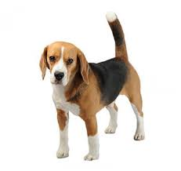

Beagle
| Weight | 10 -11kg |
| Coat | Short, haired, hard coat of medium lenght |
| Color | Many colors |
The beagle is a breed of small hound that is similar in apperance to thmuch larger foxhound. The beagle is a scent hound, developed primarily for hunting hare (beagling). With a great sense of smell and superior tracking instinct, the beagle is employed as detection for prohibited agricultural imports and foodstuffs in quarantine around the world. the beagle is inteligent but single-minded. It is popular pet due to its size, dood temper, and lack of inherited health problems.